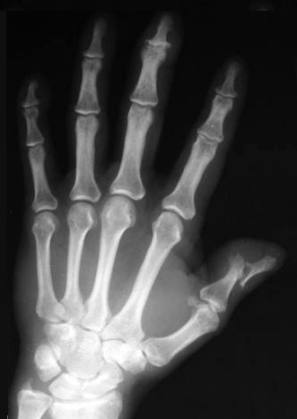

Ficha del catálogo
Artritis psoriásica
- Sistema
- Óseo
- Modalidad
- RX
- Región
- Manos y pies
- Dificultad
- Avanzado
La artritis psoriásica es una artropatía inflamatoria asociada a la psoriasis cutánea que combina destrucción articular con formación de hueso nuevo, una mezcla que la hace reconocible. Afecta con predilección a las interfalángicas distales de manos y pies y puede presentarse como oligoartritis asimétrica, como poliartritis simétrica o con afectación axial. La inflamación se centra en las entesis, es decir en las inserciones de tendones y ligamentos en el hueso. Las lesiones cutáneas pueden ser mínimas o aparecer después de la artritis.
Técnica
Dorsopalmar de ambas manos y dorsoplantar de ambos pies, con proyección de pelvis cuando hay dolor lumbar inflamatorio.
Qué observar
- Erosiones en las interfalángicas distales con proliferación ósea en los bordes
- Deformidad en copa de la falange distal sobre un extremo afilado, aspecto de lápiz en copa
- Periostitis a lo largo de la diáfisis de las falanges
- Tumefacción difusa de un dedo completo, conocida como dedo en salchicha
- Sacroileítis asimétrica y osificaciones paravertebrales gruesas
- Densidad ósea conservada pese a la destrucción articular
Hallazgos
Erosiones destructivas de predominio distal acompañadas de proliferación ósea, periostitis y tumefacción difusa de dedos, con densidad ósea preservada.
Perlas
La coexistencia de destrucción y de hueso nuevo es la firma de esta enfermedad. En la artritis reumatoide hay erosiones sin reparación y osteopenia periarticular, mientras que aquí los márgenes erosionados aparecen borrosos y con espículas óseas.
Diagnóstico diferencial
- Artritis reumatoide
- Distribución simétrica proximal, osteopenia y ausencia de proliferación ósea.
- Artrosis erosiva de las manos
- Erosiones centrales con osteofitos y sin periostitis diafisaria.
- Artropatía gotosa
- Erosiones con borde sobresaliente y nódulos densos de partes blandas.
Simuladores
- Secuelas de traumatismos digitales repetidos
- Periostitis por insuficiencia venosa crónica
- Reabsorción de falanges distales por otras causas
Por modalidad
- RX
- Base del diagnóstico estructural y del seguimiento
- US
- Demuestra entesitis y sinovitis en fases iniciales
- RM
- Detecta edema óseo y entesitis antes de que aparezcan erosiones
Protocolo
Manos y pies en proyección frontal, más pelvis si hay síntomas axiales. Ecografía o resonancia en enfermedad temprana con radiografía normal.
Clasificación
Se reconocen patrones clínicos que incluyen la oligoartritis asimétrica, la poliartritis simétrica, la forma con predominio en interfalángicas distales, la artritis mutilante y la forma axial.
Errores frecuentes
- Clasificar como artritis reumatoide toda poliartritis erosiva de manos
- No revisar los pies, donde a veces están los primeros cambios
- Pasar por alto la periostitis por considerarla artefacto de partes blandas

artritis psoriasica espondiloartritis lapiz en copa entesitis dactilitis periostitis interfalangicas distales